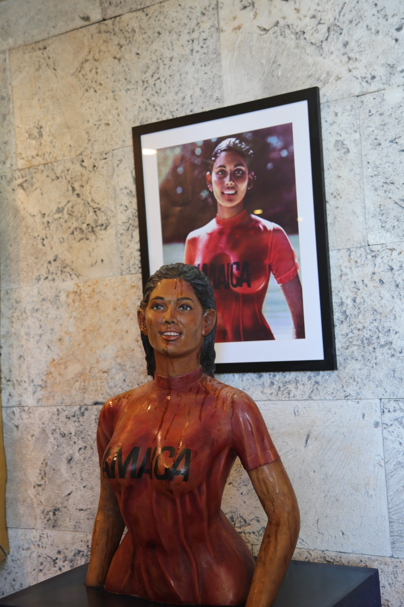

S Hotel · Kingston · 2024
Sintra Bronte
Portrait sculpture · Recycled materials

The project
An iconic image.
A sculptural portrait.
Commissioned by hotelier Christopher Issa, this portrait by Scheed Cole and his team honours Sintra Bronte, the Trinidadian model featured in Jamaica’s iconic 1972 tourism campaign.
Unveiled at Strings Restaurant at S Hotel Kingston in May 2024, the sculpture recreates her emergence from the water wearing the recognisable Jamaica T-shirt.
The team used recycled materials, including plastic bags and cardboard.
Behind the work
A chance encounter in Kingston became one of Jamaica’s most recognisable tourism images. More than fifty years later, Scheed Cole translated that photograph into sculpture.
Explore the story
A chance encounter
Sintra Bronte, a Trinidadian model living in Jamaica at the time, was waiting for her husband at the Jamaica Pegasus Hotel in New Kingston when tourism industry representatives scouting for an advertising campaign approached her. The celebrated photograph was taken the following day at Frenchman’s Cove in Portland, during a shoot she recalled lasting more than seven hours.
An image recognised around the world
The 1972 Jamaica Tourist Board poster showed Bronte emerging from the sea wearing a T-shirt emblazoned with “Jamaica”. It became one of the island’s most recognisable tourism images. At the 2024 unveiling, Tourism Minister Edmund Bartlett credited the campaign with changing perceptions of Jamaica internationally, citing approximately 500,000 visitors in its first year. That figure reflects his account of the campaign’s impact, rather than a measured effect attributable to the poster alone.
From photograph to sculpture
Hotelier Christopher Issa commissioned Scheed Cole to give the iconic portrait a new physical presence. Cole and members of his team worked with recovered materials, including plastic bags and cardboard. Cole described being struck by the opportunity to recreate an image he had known since childhood.
Sintra encounters her portrait
Bronte gave permission for the sculpture and attended its unveiling at Strings Restaurant, S Hotel Kingston, on 15 May 2024. Seeing the finished likeness, she praised its resemblance and especially its eyes. The occasion brought the subject of the original photograph together with the artist who reinterpreted it decades later.
A legacy in a new medium
The sculpture preserves a moment in Jamaican visual and tourism history while recognising the woman behind the image. Through portraiture and reclaimed materials, Cole connects a familiar public image with the personal story and craft behind it.
Sources: The Gleaner, 19 May 2024; Breaking Travel News, 19 May 2024; Jamaica Observer, 19 May 2024.